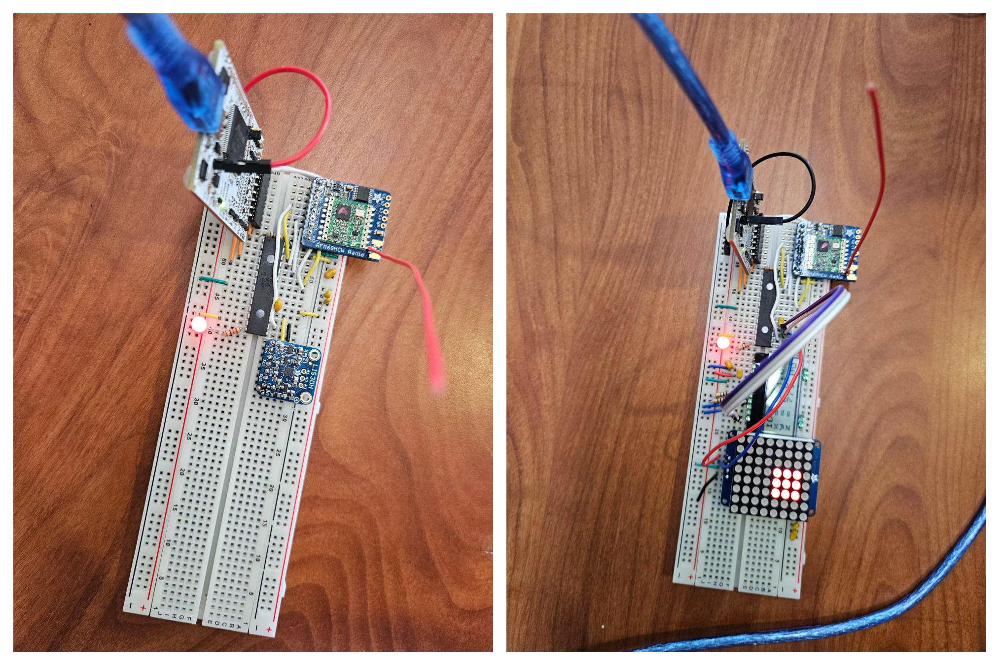

Wireless Motion-Controlled Display
PIC24 · LIS3DH · RFM69 · C · GitHub
Two wireless nodes that turn an accelerometer's motion into a live picture on an 8x8 LED matrix. When you tilt the sensor, a lit rectangle slides around the grid, and the Z axis changes how big it is.
The idea
This was a four-person project. It started as a way to help drone pilots see their acceleration at a glance, but honestly it's mostly just fun to watch.
My part
I focused on the display side. I worked on the DOGS104 LCD and the LED matrix, and I wrote the code that takes the raw accelerometer numbers and turns them into motion on the screen. My teammates handled the RFM69 radio link and the LIS3DH accelerometer on the sensor node.

Fitting motion onto 64 pixels
The main constraint was resolution. You can't show much on an 8x8 grid, so I clamp each axis to plus or minus 2 g and map X and Y onto one of eight positions, which is what moves the rectangle around. The Z axis goes through a set of thresholds that decide the rectangle's size and brightness, and everything is clamped so the shape never goes off the edge.
The fiddly part was getting from a raw accelerometer struct to motion that actually looks smooth and intentional on that few pixels. I also got a lot of bare-metal PIC24 practice out of it, and a better sense of how to split up work on a team.